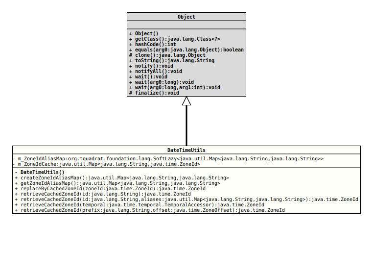

- Author:
- Thomas Thrien (thomas.thrien@tquadrat.org)
- Version:
- $Id: DateTimeUtils.java 1091 2024-01-25 23:10:08Z tquadrat $
- Since:
- 0.3.0
- UML Diagram
-

UML Diagram for "org.tquadrat.foundation.util.DateTimeUtils"
{kind=link}
-
Field Summary
FieldsModifier and TypeFieldDescriptionThe alias map.The cached zone ids. -
Constructor Summary
Constructors -
Method Summary
Modifier and TypeMethodDescriptionCreates the alias map for the old (deprecated) zone ids that are used for the call toZoneId.of(String, java.util.Map)to retrieve aZoneIdinstance for the given zone id.Returns the alias map for the zone id, holding the deprecated ids.static final ZoneIdreplaceByCachedZoneId(ZoneId zoneId) Replaces the given instance ofZoneIdby one from the cache.static final ZoneIdRetrieves a cached instance ofZoneId.static final ZoneIdretrieveCachedZoneId(String prefix, ZoneOffset offset) Retrieves a cached instance ofZoneIdfor the given offset.static final ZoneIdretrieveCachedZoneId(String id, Map<String, String> aliases) Retrieves a cached instance ofZoneIdusing a map of aliases.static final ZoneIdretrieveCachedZoneId(TemporalAccessor temporal) Retrieves a cached instance ofZoneIdfrom the giventemporal.
-
Field Details
-
Constructor Details
-
DateTimeUtils
private DateTimeUtils()No instance allowed for this class!
-
-
Method Details
-
createZoneIdAliasMap
Creates the alias map for the old (deprecated) zone ids that are used for the call toZoneId.of(String, java.util.Map)to retrieve aZoneIdinstance for the given zone id.- Returns:
- The alias map.
- Since:
- 0.4.0
-
getZoneIdAliasMap
Returns the alias map for the zone id, holding the deprecated ids. If not yet created, the alias map will be created by a call to
createZoneIdAliasMap()and the result to that call will be cached for future calls.- Returns:
- The alias map.
- Since:
- 0.4.0
- See Also:
-
replaceByCachedZoneId
Replaces the given instance of
ZoneIdby one from the cache.- Parameters:
zoneId- The instance ofZoneIdthat needs to be replaced.- Returns:
- The instance of
ZoneIdfrom the cache; this may be the same as the argument in case the zone id was not yet in the cache. - See Also:
-
retrieveCachedZoneId
public static final ZoneId retrieveCachedZoneId(String id) throws DateTimeException, ZoneRulesException Retrieves a cached instance of
ZoneId.Usually, each call to
ZoneId.of(String)returns a new instance, even if the argument remains the same. This means that it cannot be assumed thatZoneId.of( "UTC" ) == ZoneId.of( "UTC" )returns
true(although it cannot be excluded either).If an application uses
ZoneIds a lot, this could cause significant memory pressure, so it would make sense to cache them.This is safe because the instances of
ZoneIdare immutable (the documentation says, they should be treated as ValueBased).As the number of distinct timezones is limited, there is no housekeeping for the cache itself.
- Note:
-
- The id strings are case-sensitive!
- Parameters:
id- The id for the time zone.- Returns:
- The instance of
ZoneIdfor the given id. - Throws:
DateTimeException- The given id has an invalid format.ZoneRulesException- The given id is a region id that cannot be found.- See Also:
-
retrieveCachedZoneId
public static final ZoneId retrieveCachedZoneId(String id, Map<String, String> aliases) throws DateTimeException, ZoneRulesExceptionRetrieves a cached instance of
ZoneIdusing a map of aliases.- Parameters:
id- The id for the time zone.aliases- A map of alias zone ids (typically abbreviations) to real zone ids.- Returns:
- The instance of
ZoneIdfor the given id. - Throws:
DateTimeException- The given id has an invalid format.ZoneRulesException- The given id is a region id that cannot be found.- See Also:
-
retrieveCachedZoneId
Retrieves a cached instance of
ZoneIdfrom the giventemporal.- Parameters:
temporal- The temporal object.- Returns:
- The instance of
ZoneIdfor the temporal. - Throws:
DateTimeException- The given temporal cannot be converted to aZoneId.- See Also:
-
retrieveCachedZoneId
public static final ZoneId retrieveCachedZoneId(String prefix, ZoneOffset offset) throws IllegalArgumentException Retrieves a cached instance of
ZoneIdfor the given offset.- Parameters:
prefix- One of "GMT", "UTC", "UT" or the empty string.offset- The offset.- Returns:
- The instance of
ZoneIdfor the arguments. - Throws:
IllegalArgumentException- The prefix is not one of "GMT", "UTC", "UT" or the empty string.- See Also:
-